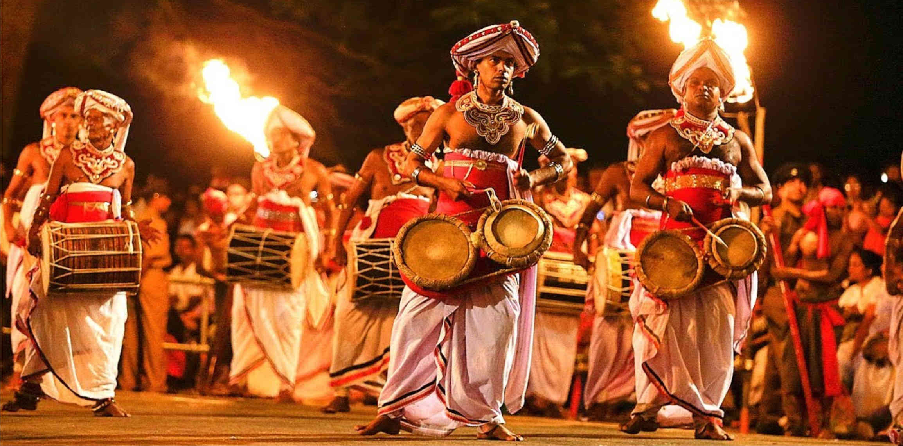

While the beautiful nation of Sri Lanka is not a large one, it is filled to the brim various activities and sights for visitors to enjoy, ranging from the wildlife, scenic routes, the exotic nature, hiking trails, traditional dances
and much more.
Listed below is only a few interesting activities which often attract and are enjoyed by many tourists.
Safari in Yala National Park

Visitors who leave Yala national park, are left with a life-long unforgettable memory and a truly thrilling experience. No matter if it is your first time visiting a national park, or if you are a
passionate nature enthusiast, Yala national park provides stunning sights for all its visitors. Yala has over 40 different species of mammals, including elephants, leopards, golden jackals, deer and so much more.
Further it has over 200 different species of birds for visitors to view and observe.
To truly enjoy and take in the stunning sights at Yala national park, it is recommended that a minimum of 2 days is taken, so that visitors may take their time and absorb all the beauty the park has to offer, while also increasing their chances of spotting more
animals and observing them carefully. Transportation around the park may be purchased at the gates, or through a tour guides help, while the cost to enter the park may differ, depending on the season it is overall an invaluable experience and worth the time and money you will invest.
Click here to go to the official Yala national park website in order to book reservations, make inquiries and learn more.
Water Sports

Calling all thrill seekers to Sri Lanka, to explore our thrilling water sports and instate a new definition to the meaning of fun. Surrounded by nothing but a beautiful ocean and filled with rivers and lakes,
Sri Lanka is the perfect arena for any type of water sport no matter if you are a beginner, intermediate or a pro. The beautiful nation of Sri Lanka offers multiple different varieties of water sports ranging from surfing,
white water rafting, kite surfing and so much more.
Come to Sri Lanka to see our glistening waters but stay for the adventurous and exciting life, filled with adrenaline. Across the island there are multiple training schools or shops that rent out the required gear and may be found very easily.
Click here to learn more about how and where you can rent equipment, find good locations get help and much more.
Perahera

Watch the Perahera, a historic ritual which has been carried out in Sri Lanka, for over 100s of years, Buddhist monks across the island bring in the perfect combination of tradition, music, religion and dance in order to honor Lord Buddha,
the founder and teacher of Buddhism, who once visited Sri Lanka. During a Perahera dozens of elephants are shrouded in glistening royal attire and dance to the sound of the music, while parading the streets to show everyone how majestic they are.
Surrounding them are legions of dancers, flag bearers, musicians and many other different types of artists showing off their art forms and skills, amazing everyone and bringing the streets to life.
It will truly be a moment that you will treasure and remember. Throughout the island several Perahera's are orchestrated by monks. However the highlight of them all is the Kandyan Perahera, which takes place on the full moon poya day on the month of August, in which the sacred tooth relic of Lord Buddha is transported around in a golden casket on the back of an elephant,
for all to see. This ritual is marked worldwide as one of the most sacred and breathtaking traditions in all of Asia, as vast numbers of people will travel a great distances in order to view this spectacular occasion.
Click here to learn more about the history, dates and details of Perahera's in Sri Lanka.